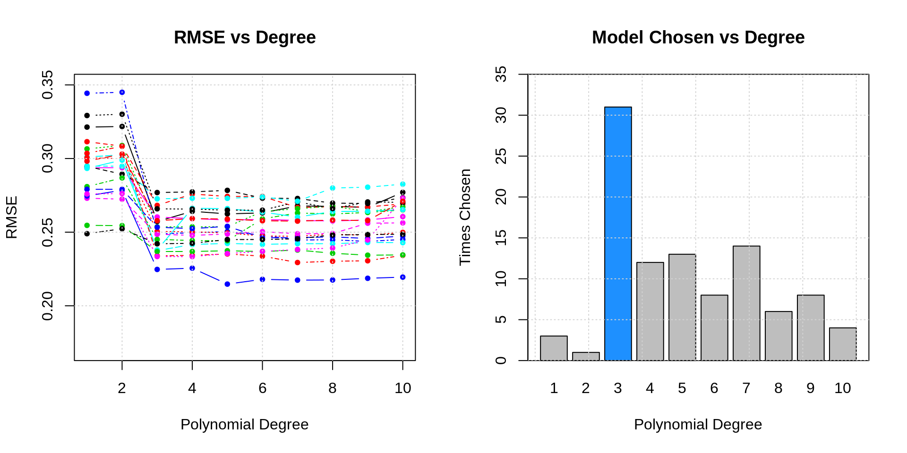
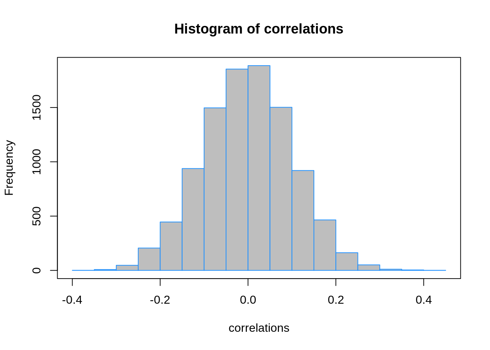

Chapter 7 Resampling
7.1 STAT 432 Materials
In this chapter we introduce cross-validation. We will highlight the need for cross-validation by comparing it to our previous approach, which was to use a single validation set inside of the training data.
To illustrate the use of resampling techniques, we’ll consider a regression setup with a single feature \(x\), and a regression function \(f(x) = x^3\). Adding an additional noise parameter, and the distribution of the feature variable, we define the entire data generating process as
\[ X \sim \text{U(a = -1, b = 1)}\\ Y \mid X = x \sim N(\mu = x^3, \sigma^2 = 0.25 ^ 2) \]
We write an R function that generates datasets according to this process.
gen_sim_data = function(sample_size) {
x = runif(n = sample_size, min = -1, max = 1)
y = rnorm(n = sample_size, mean = x ^ 3, sd = 0.25)
tibble(x, y)
}We first simulate a single train dataset, which we also split into an estimation and validation set. We also simulate a large test dataset. (Which we could not do in pratice, but is possible here.)
set.seed(1)
sim_trn = gen_sim_data(sample_size = 200)
sim_idx = sample(1:nrow(sim_trn), 160)
sim_est = sim_trn[sim_idx, ]
sim_val = sim_trn[-sim_idx, ]
sim_tst = gen_sim_data(sample_size = 10000)We plot this training data, as well as the true regression function.
plot(y ~ x, data = sim_trn, col = "dodgerblue", pch = 20)
grid()
curve(x ^ 3, add = TRUE, col = "black", lwd = 2)
Recall that we needed this validation set because the training error was far too optimistic for highly flexible models. This would lead us to always use the most flexible model.
fit = lm(y ~ poly(x, 10), data = sim_trn)
calc_rmse(actual = sim_est$y, predicted = predict(fit, sim_est))## [1] 0.2287754## [1] 0.27209837.2 Validation-Set Approach
- TODO: consider fitting polynomial models of degree k = 1:10 to data from this data generating process
- TODO: here, we can consider k, the polynomial degree, as a tuning parameter
- TODO: perform simulation study to evaluate how well validation set approach works
- TODO: each simulation we will…
set.seed(42)
for (i in 1:num_sims) {
# simulate data
sim_trn = gen_sim_data(sample_size = 200)
# set aside validation set
sim_idx = sample(1:nrow(sim_trn), 160)
sim_est = sim_trn[sim_idx, ]
sim_val = sim_trn[-sim_idx, ]
# fit models and store RMSEs
for (j in 1:num_degrees) {
#fit model
fit = glm(y ~ poly(x, degree = j), data = sim_est)
# calculate error
val_rmse[i, j] = calc_rmse(actual = sim_val$y, predicted = predict(fit, sim_val))
}
}
- TODO: issues are hard to “see” but have to do with variability
- TODO: sometimes we are selecting models that are not flexible enough!
7.3 Cross-Validation
Instead of using a single test-train split, we instead look to use \(K\)-fold cross-validation.
\[ \text{RMSE-CV}_{K} = \sum_{k = 1}^{K} \frac{n_k}{n} \text{RMSE}_k \]
\[ \text{RMSE}_k = \sqrt{\frac{1}{n_k} \sum_{i \in C_k} \left( y_i - \hat{f}^{-k}(x_i) \right)^2 } \]
- \(n_k\) is the number of observations in fold \(k\)
- \(C_k\) are the observations in fold \(k\)
- \(\hat{f}^{-k}()\) is the trained model using the training data without fold \(k\)
If \(n_k\) is the same in each fold, then
\[ \text{RMSE-CV}_{K} = \frac{1}{K}\sum_{k = 1}^{K} \text{RMSE}_k \]
- TODO: create and add graphic that shows the splitting process
- TODO: Can be used with any metric, MSE, RMSE, class-err, class-acc
There are many ways to perform cross-validation in R, depending on the statistical learning method of interest. Some methods, for example glm() through boot::cv.glm() and knn() through knn.cv() have cross-validation capabilities built-in. We’ll use glm() for illustration. First we need to convince ourselves that glm() can be used to perform the same tasks as lm().
## (Intercept) poly(x, 3)1 poly(x, 3)2 poly(x, 3)3
## -0.02516901 5.06661745 -0.09349681 2.64581436## (Intercept) poly(x, 3)1 poly(x, 3)2 poly(x, 3)3
## -0.02516901 5.06661745 -0.09349681 2.64581436By default, cv.glm() will report leave-one-out cross-validation (LOOCV).
## [1] 0.2488233 0.2488099We are actually given two values. The first is exactly the LOOCV-MSE. The second is a minor correction that we will not worry about. We take a square root to obtain LOOCV-RMSE.
In practice, we often prefer 5 or 10-fold cross-validation for a number of reason, but often most importantly, for computational efficiency.
## [1] 0.2470322 0.2466417We repeat the above simulation study, this time performing 5-fold cross-validation. With a total sample size of \(n = 200\) each validation set has 40 observations, as did the single validation set in the previous simulations.
set.seed(42)
for (i in 1:num_sims) {
# simulate data, use all data for training
sim_trn = gen_sim_data(sample_size = 200)
# fit models and store RMSE
for (j in 1:num_degrees) {
#fit model
fit = glm(y ~ poly(x, degree = j), data = sim_trn)
# calculate error
cv_rmse[i, j] = sqrt(boot::cv.glm(sim_trn, fit, K = 5)$delta[1])
}
}
| Polynomial Degree | Mean, Val | SD, Val | Mean, CV | SD, CV |
|---|---|---|---|---|
| 1 | 0.290 | 0.031 | 0.293 | 0.015 |
| 2 | 0.291 | 0.031 | 0.295 | 0.014 |
| 3 | 0.247 | 0.027 | 0.251 | 0.010 |
| 4 | 0.248 | 0.028 | 0.252 | 0.010 |
| 5 | 0.248 | 0.027 | 0.253 | 0.010 |
| 6 | 0.249 | 0.027 | 0.254 | 0.011 |
| 7 | 0.251 | 0.027 | 0.255 | 0.012 |
| 8 | 0.252 | 0.027 | 0.257 | 0.011 |
| 9 | 0.253 | 0.028 | 0.258 | 0.012 |
| 10 | 0.255 | 0.027 | 0.259 | 0.012 |

- TODO: differences: less variance, better selections
7.4 Test Data
The following example, inspired by The Elements of Statistical Learning, will illustrate the need for a dedicated test set which is never used in model training. We do this, if for no other reason, because it gives us a quick sanity check that we have cross-validated correctly. To be specific we will always test-train split the data, then perform cross-validation within the training data.
Essentially, this example will also show how to not cross-validate properly. It will also show can example of cross-validated in a classification setting.
Consider a binary response \(Y\) with equal probability to take values \(0\) and \(1\).
\[ Y \sim \text{bern}(p = 0.5) \]
Also consider \(p = 10,000\) independent predictor variables, \(X_j\), each with a standard normal distribution.
\[ X_j \sim N(\mu = 0, \sigma^2 = 1) \]
We simulate \(n = 100\) observations from this data generating process. Notice that the way we’ve defined this process, none of the \(X_j\) are related to \(Y\).
set.seed(42)
n = 200
p = 10000
x = replicate(p, rnorm(n))
y = c(rbinom(n = n, size = 1, prob = 0.5))
full_data = as_tibble(data.frame(y, x))
full_data## # A tibble: 200 x 10,001
## y X1 X2 X3 X4 X5 X6 X7 X8
## <int> <dbl> <dbl> <dbl> <dbl> <dbl> <dbl> <dbl> <dbl>
## 1 1 1.37 -2.00 1.33 -0.248 0.689 2.33 -0.747 0.877
## 2 1 -0.565 0.334 -0.869 0.422 0.725 0.524 0.0366 -1.77
## 3 1 0.363 1.17 0.0555 0.988 0.217 0.971 0.323 -0.0457
## 4 0 0.633 2.06 0.0491 0.836 -0.202 0.377 0.380 -0.395
## 5 0 0.404 -1.38 -0.578 -0.661 -1.37 -0.996 0.877 -0.128
## 6 1 -0.106 -1.15 -0.999 1.56 -0.309 -0.597 0.933 1.10
## 7 1 1.51 -0.706 -0.00243 -1.62 -0.453 0.165 -2.43 -1.26
## 8 0 -0.0947 -1.05 0.656 0.864 0.663 -2.93 1.73 -0.265
## 9 1 2.02 -0.646 1.48 -0.512 1.31 -0.848 0.456 2.55
## 10 0 -0.0627 -0.185 -1.91 -1.92 0.501 0.799 -0.570 -1.48
## # … with 190 more rows, and 9,992 more variables: X9 <dbl>, X10 <dbl>,
## # X11 <dbl>, X12 <dbl>, X13 <dbl>, X14 <dbl>, X15 <dbl>, X16 <dbl>,
## # X17 <dbl>, X18 <dbl>, X19 <dbl>, X20 <dbl>, X21 <dbl>, X22 <dbl>,
## # X23 <dbl>, X24 <dbl>, X25 <dbl>, X26 <dbl>, X27 <dbl>, X28 <dbl>,
## # X29 <dbl>, X30 <dbl>, X31 <dbl>, X32 <dbl>, X33 <dbl>, X34 <dbl>,
## # X35 <dbl>, X36 <dbl>, X37 <dbl>, X38 <dbl>, X39 <dbl>, X40 <dbl>,
## # X41 <dbl>, X42 <dbl>, X43 <dbl>, X44 <dbl>, X45 <dbl>, X46 <dbl>,
## # X47 <dbl>, X48 <dbl>, X49 <dbl>, X50 <dbl>, X51 <dbl>, X52 <dbl>,
## # X53 <dbl>, X54 <dbl>, X55 <dbl>, X56 <dbl>, X57 <dbl>, X58 <dbl>,
## # X59 <dbl>, X60 <dbl>, X61 <dbl>, X62 <dbl>, X63 <dbl>, X64 <dbl>,
## # X65 <dbl>, X66 <dbl>, X67 <dbl>, X68 <dbl>, X69 <dbl>, X70 <dbl>,
## # X71 <dbl>, X72 <dbl>, X73 <dbl>, X74 <dbl>, X75 <dbl>, X76 <dbl>,
## # X77 <dbl>, X78 <dbl>, X79 <dbl>, X80 <dbl>, X81 <dbl>, X82 <dbl>,
## # X83 <dbl>, X84 <dbl>, X85 <dbl>, X86 <dbl>, X87 <dbl>, X88 <dbl>,
## # X89 <dbl>, X90 <dbl>, X91 <dbl>, X92 <dbl>, X93 <dbl>, X94 <dbl>,
## # X95 <dbl>, X96 <dbl>, X97 <dbl>, X98 <dbl>, X99 <dbl>, X100 <dbl>,
## # X101 <dbl>, X102 <dbl>, X103 <dbl>, X104 <dbl>, X105 <dbl>,
## # X106 <dbl>, X107 <dbl>, X108 <dbl>, …Before attempting to perform cross-validation, we test-train split the data, using half of the available data for each. (In practice, with this little data, it would be hard to justify a separate test dataset, but here we do so to illustrate another point.)
trn_idx = sample(1:nrow(full_data), trunc(nrow(full_data) * 0.5))
trn_data = full_data[trn_idx, ]
tst_data = full_data[-trn_idx, ]Now we would like to train a logistic regression model to predict \(Y\) using the available predictor data. However, here we have \(p > n\), which prevents us from fitting logistic regression. To overcome this issue, we will first attempt to find a subset of relevant predictors. To do so, we’ll simply find the predictors that are most correlated with the response.
# find correlation between y and each predictor variable
correlations = apply(trn_data[, -1], 2, cor, y = trn_data$y)
While many of these correlations are small, many very close to zero, some are as large as 0.40. Since our training data has 50 observations, we’ll select the 25 predictors with the largest (absolute) correlations.
## X4942 X867 X8617 X8044 X406 X4358
## 0.4005771 0.3847397 0.3809371 0.3692479 -0.3571329 0.3553777
## X7725 X1986 X3784 X77 X7010 X9354
## -0.3459522 -0.3448612 0.3298109 -0.3252776 -0.3242813 0.3227353
## X8450 X2355 X4381 X2486 X5947 X5767
## 0.3220087 0.3192606 0.3157441 0.3149892 0.3131235 0.3114936
## X1227 X1464 X8223 X188 X4203 X2234
## -0.3105052 -0.3104528 0.3084551 0.3065491 0.3039848 -0.3036512
## X1098
## -0.3036153We subset the training and test sets to contain only the response as well as these 25 predictors.
Then we finally fit an additive logistic regression using this subset of predictors. We perform 10-fold cross-validation to obtain an estimate of the classification error.
add_log_mod = glm(y ~ ., data = trn_screen, family = "binomial")
boot::cv.glm(trn_screen, add_log_mod, K = 10)$delta[1]## [1] 0.3742339The 10-fold cross-validation is suggesting a classification error estimate of almost 30%.
add_log_pred = (predict(add_log_mod, newdata = tst_screen, type = "response") > 0.5) * 1
calc_misclass(predicted = add_log_pred, actual = tst_screen$y)## [1] 0.48However, if we obtain an estimate of the error using the set, we see an error rate of about 50%. No better than guessing! But since \(Y\) has no relationship with the predictors, this is actually what we would expect. This incorrect method we’ll call screen-then-validate.
Now, we will correctly screen-while-validating. Essentially, instead of simply cross-validating the logistic regression, we also need to cross validate the screening process. That is, we won’t simply use the same variables for each fold, we get the “best” predictors for each fold.
For methods that do not have a built-in ability to perform cross-validation, or for methods that have limited cross-validation capability, we will need to write our own code for cross-validation. (Spoiler: This is not completely true, but let’s pretend it is, so we can see how to perform cross-validation from scratch.)
This essentially amounts to randomly splitting the data, then looping over the splits. The createFolds() function from the caret() package will make this much easier.
## $Fold01
## [1] 17 23 27 44 45 76 85 87 93 97
##
## $Fold02
## [1] 6 14 15 26 37 38 55 68 69 71
##
## $Fold03
## [1] 3 4 7 29 39 52 54 57 59 82
##
## $Fold04
## [1] 19 21 40 46 48 56 73 78 91 96
##
## $Fold05
## [1] 25 34 36 58 61 65 66 75 83 89
##
## $Fold06
## [1] 2 9 10 62 74 79 80 90 92 98
##
## $Fold07
## [1] 8 31 32 41 43 53 60 67 88 95
##
## $Fold08
## [1] 12 18 33 35 42 49 51 64 84 94
##
## $Fold09
## [1] 11 13 16 20 28 47 50 77 99 100
##
## $Fold10
## [1] 1 5 22 24 30 63 70 72 81 86# use the caret package to obtain 10 "folds"
folds = caret::createFolds(trn_data$y, k = 10)
# for each fold
# - pre-screen variables on the 9 training folds
# - fit model to these variables
# - get error on validation fold
fold_err = rep(0, length(folds))
for (i in seq_along(folds)) {
# split for fold i
est_fold = trn_data[-folds[[i]], ]
val_fold = trn_data[folds[[i]], ]
# screening for fold i
correlations = apply(est_fold[, -1], 2, cor, y = est_fold[,1])
selected = order(abs(correlations), decreasing = TRUE)[1:25]
est_fold_screen = est_fold[ , c(1, selected)]
val_fold_screen = val_fold[ , c(1, selected)]
# error for fold i
add_log_mod = glm(y ~ ., data = est_fold_screen, family = "binomial")
add_log_prob = predict(add_log_mod, newdata = val_fold_screen, type = "response")
add_log_pred = ifelse(add_log_prob > 0.5, yes = 1, no = 0)
fold_err[i] = mean(add_log_pred != val_fold_screen$y)
}
# report all 10 validation fold errors
fold_err## [1] 0.4 0.9 0.6 0.4 0.6 0.3 0.7 0.5 0.6 0.6# properly cross-validated error
# this roughly matches what we expect in the test set
mean(fold_err)## [1] 0.56TODO: note that, even cross-validated correctly, this isn’t a brilliant variable selection procedure. (it completely ignores interactions and correlations among the predictors. however, if it works, it works.) next chapters…
TODO: calculate test error